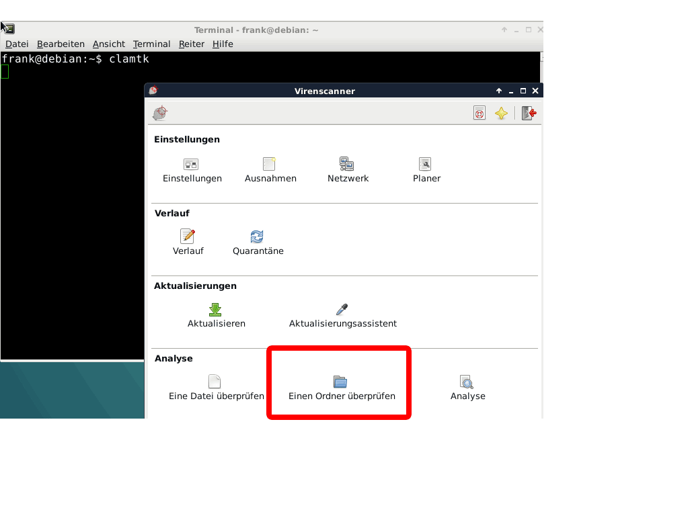

a) ClamAV ist ein open-source, kommandozeilengesteuerter Virenscanner
fuer Linux. Ein scan-Daemon wird mit ausgeliefert. Optional ist eine
GUI CLamTK erhaeltlich.
ClamAV ist ebenfalls für Windows
erhältlich und wird in Windows-Servern eingesetzt.
Quelle
b)
# sudo apt-get install clamav
# sudo apt-get install clamtk
c)
# sudo freshclam
d)Die Visuelle Ausführung
